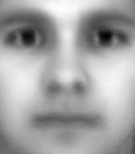
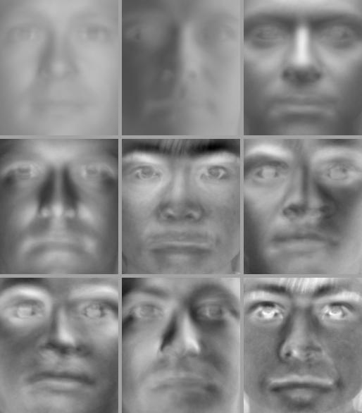
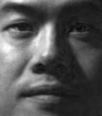
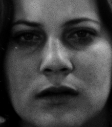
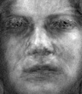
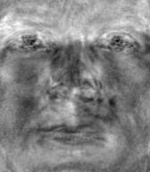
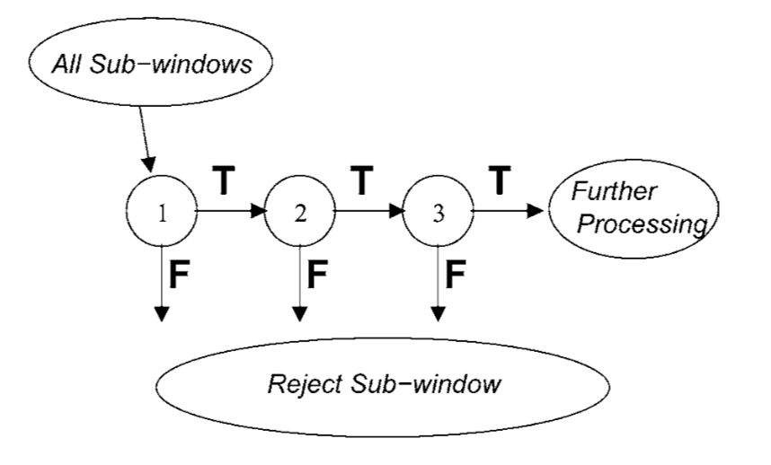

Ability to recognise a face is one of the most important trait of intelligence .With advancement in vision technology (i.e. digital camera) and computing power , our curiosity to teach computer to how to recognition a face is evident . In this direction of advancement some of the earliest steps were eigenface,Fisherface and Viola-Jones face detection algorithm.
We will be studying and implementing these 3 classical face recognition algorithms: eigenfaces, Fisherfaces and Viola-Jones face detection.
The Eigenfaces algorithm
The Eigenfaces algorithm was proposed by Turk and Pentland 4.2.2 in 1991. This is an SVD-based algorithm. The idea is that If we can extract and identify the features that is common to most of the faces then we can teach a computer how to distinguish between a face and a non-face based on those features. The top k features (principal components) from a set of training images are chosen by applying SVD to the co-variance matrix of the data (i.e. PCA). The images are then projected onto the subspace spanned by the chosen vectors. The Euclidean distance between images is calculated to decide whether a test image is part of the given image set or not.
Description of the algorithm
Deviation matrix
The data consists if m images x1, x2, …, xm, each of size n × n, such that each images belongs to one of c classes {X1, …Xc}. The images are flattened to column vectors of size n2 × 1. The average face of the set is defined by $$\Psi=\Sigma_{n=1}^{m} x_n$$(See Figure 1). Each face differs from the average by the vector Φi = xi − Ψ . Let A denote the data matrix i.e. A = [Φ1Φ2…Φn], (dim A = n2 × m). The idea now is to find the top k left singular vectors of A and the corresponding projection W which will project the given images onto the subspace spanned by the chosen vectors. As a result we will have achieved dimensionality reduction and will have retained the information that best describes the variation in the data.
Average face
Eigenvectors calculation
Theoretically, the way to proceed would be to form the co-variance matrix C = AAT and find the eigenvalues and eigenvectors of C. But dim C = n2 × n2, so this is expensive. Instead, we find the eigenvalues/eigenvectors of CT = ATX, which is cheaper as well as useful since it gives us the required non-zero eigenvalues and the corresponding eigenvectors. Notice that if vi are the eigenvectors of ATA, then ATAvi = λivi so that AAT(Avi) = λi(Avi), thus Avi are the eigenvectors of AAT. So it is enough to find the vectors {vi}. We will denote L = ATA, where Lmn = ΦmTΦn. Now the eigenfaces $$u_l=\sum_{i=1}^k v_{li}\Phi_i \quad l=1,\dots,k$$
Top 9 eigenfaces
Projection onto face-space
The eigenface images calculated from the eigenvectors of L span a basis set with which to describe face images. For Yale data-set B We have taken into account only the first 1007 images for training set and found that about 350 eigenfaces were sufficient for a very good description of the set of face images. With M′ = 350 eigenfaces. A new face image (x) is transformed into its eigenface components by: ωk = ukT(x − Ψ) The weights form a vector ΩT = [ω1, ω2, ...ωM′] that describes the contribution of each eigenface in representing the input face image, treating the eigenfaces as a basis set for face images. And, For a deviation image Φ = x − Ψ , its projection onto the face space is defined by: $$\Phi_f = \sum_{n=1}^{M'} \omega_i u_i$$ Define ϵ ,the difference between an image(x) and its projection onto face-space(Ψf)by: ϵ2 = ||Φ − Φf||2 Let θf is the threshold for known face and θn is the threshold for non-face. At this stage there are 3 possibilities for an input image(x) and its corresponding ϵ: (1) ϵ < θf meaning image(x) is a known face i.e x ∈ training set. (2) θf < ϵ < θn meaning image(x) is a unknown face i.e x is a face and x ∉ training set. (3) ϵ > θn ,meaning x is a non-face.
This approach to face recognition involves the following initialization operations:
Acquire a set a face images for training.
Calculate eigenvectors(eigenfaces) of C that contains the most important features of a face image.
Consider only the first K images (eigenfaces). The space spanned by these images is called face space.
Project any new image into this face space.Any non-face image must deviate from itself significantly as the basis vectors(eigenfaces) captures features of only face images ,which are supposed to be absent in non-face image.see Figure 2 & Figure 3.
Experiments and results
The Table 1 is based on experiments on Yale data-set B. There are 38 individuals and each of them have 64 images (N.B. There are some bad images that were damaged during the image acquisition. We have cleaned the dat-set and this refined data-set is available at CroppedYaleB.zip as a zip file). The original data-set is available at yale data-set B site. We have taken into account only the first 16 individuals (consisting of 1007 images)for training set. And tested on 280 unknown face images and 100 non-face images available at nonface.zip and nonface.zip. Of these 287 unknown face images, images(picked at random) are of individuals 17 -38 of yale data-set B site, 40 images are of unknown face images downloaded from various sites (publicly available images) through google search results of frontal face images, 77 frontal-face images of mugshot database, 30 images of yaleData-setA. All the test-face images have been suitably cropped to match the dimensions of the training images. The 100 non-face images were acquired through google search of different non-face images. For setting up θf and θn we have randomly taken 20% images of each of training faces,unknown-faces and non-face images randomly . θf is the threshold for known face and θn is the threshold for non-face. A implementation is available as a jupyter-notebook at this link.

a)A known face and b) its projections in face space
  
a)Unknown face image and c)no-face image and their projections b) & d) in face space
Observations - I
Data-set
(Faces,non-faces)
False
False
Accuracy
positives
negatives
Yale data-set A
2/50
10/50
88%
Yale data-set B
1
1
1
1
1
1
The Fisherfaces algorithm
The Fisherfaces algorithm is an improvement over the eigenfaces algorithm. It is based on Fisher’s linear discriminant (fld) 4.2.2. This method takes into consideration the between-class and within-class scatter and tries to maximize the ratio of the between-class scatter to the within-class scatter. The data is re-arranged (projected onto a suitable subspace) so that the focus is more on linearly separating the classes rather than images themselves. Thus, while PCA (the method used for eigenfaces) retains the variations that come about due to changes in lighting and facial expressions, the Fisherfaces method overcomes these to some extent by focusing on the between-class scatter rather than the total scatter.
Description of the algorithm
Let X denote the image (data) matrix i.e. X = [x1|x2|…|xn], (dim X = n2 × m) as in the eigenfaces algorithm. Let ST denote the total scatter matrix of the given data, $$S_T = \sum_{i=1}^{m} (x_i - \mu)(x_i - \mu)^T \mathrm{~~where~~} \mu = \frac{1}{m} \sum_{i=1}^{m} x_i.$$μ is the mean or the average face of the data. Then ST = XXT (i.e. the matrix C of the eigenfaces algorithm).
Let SB and SW denote the between-class and within-class scatter matrices, respectively. They are defined as: $$S_B = \sum_{i=1}^{c} n_i (\mu_i - \mu)(\mu_i - \mu)^T$$$$S_W = \sum_{i=1}^{c} \sum_{x_k \in X_i} (x_k - \mu_i)(x_k - \mu_i)^T$$ where ni is the number of images in class Xi and $\displaystyle{\mu_i = \frac{1}{n_i} \sum_{i=1}^{n_i} x_i}$ is the mean image of class Xi.
In general, the
Experiments and results
The Viola-Jones algorithm
The Viola-Jones algorithm was proposed by Paul Viola and Michael Jones in 2001. This is one of the first algorithm which provided very good object detection rates in real-time. The main idea lies in the irregular colour composition on a human face due to shadow; which we characterize using the Haar features, which are some rectangle-like features described in the algorithm. Also, we learn about the summed area table for the calculation of integral images which helps in the computation of the Haar features in a much efficient manner. We select all the important Haar features in the image and then we check for the value of the Haar feature, if it is above a certain threshold or not, to determine whether it is a face or a non-face image.
Description of the algorithm
The algorithm can be briefly described in the following stages:
Haar Features and Integral Image We divide the image frame into a grid of rectangles. Now we select a subset of this rectangle grid to form a Haar feature, here we are using 3 types of Haar Features; two-rectangle features, three-rectangle features and finally a four-rectangle feature. The regions have same shape and size, and are horizontally or vertically adjacent. We compute the sum of the pixels in the light region and subtract it from the sum of the pixels in the dark region to compute the Haar feature values. Now to make our algorithm more efficient, we use the concept of Integral images or Summed area table to compute the Haar feature values. So, the integral image at the location x, y contains the sum of the pixels above and left of x, y inclusive. $$ii(x,y) = \sum\limits_{x'\leq x, y'\leq y}i(x',y')$$ where ii(x, y) is the integral image and i(x, y) is the pixel value in the original image. Here, we observe that using the integral image, we can compute the rectangular sum using the four vertices of the considered rectangle.
The sum of the pixels within the rectangle D can be computed using the integral image value at points 1, 2, 3 and 4, it is given by 4+1-(2+3).
AdaBoost Algorithm and Classifiers This is a machine learning algorithm for selecting the best subset of features among all available features. We first initialize the weights of each training example as $w_i=\frac{1}{2m},\frac{1}{2l}$ for yi = 0, 1 respectively, where m and l are the number of negative and positive samples. Firstly, we normalize the weights as $w_i = \frac{w_i}{\sum\limits_{j}w_j}$. Now, training the weak classifiers is the most computationally expensive part of this algorithm as because, each time a new weak classifier is selected as the best, all of them have to be retrained since the training examples are weighted differently. For each feature, we sort the training examples based on feature value to find the optimal threshold and polarity. For each element in the sorted list, we have four sums; the total sum of positive example weights T+, the total sum of negative example weights T−, the sum of positive weights below the current example being considered S+ and the sum of negative weights below the current example being considered S−. The error is given by: e = min(S+ + T− − S−, S− + T+ − S+) Threshold is set to the value of the feature at which the error is minimum. So, this way we train all the weak classifiers and they will be returned in an array. Now we select the best weak classifier amongst these by iterating through each classifier and calculating the average weighted error of each one. We update the weights as, wi = wiβt1 − ei where $\beta_t = \frac{e_t}{1-e_t}$ and ei = 0 if the considered example is classified correctly and 1 otherwise. Here, et denotes the error of the best classifier for the t-th training example. Now, we store the value of $\alpha_t = log(\frac{1}{\beta_t})$ and the best weak classifiers in two different arrays. Finally, we construct the strong classifier using our weak classifiers. $$C(x) = \left\{
\begin{array}{ll}
1 & if \sum\limits_{t=1}^{T}\alpha_t h_t(x) \geq \frac{1}{2}\sum\limits_{t=1}^{T}\alpha_t \\
0 & otherwise \\
\end{array}
\right.$$ where ht is the t-th best weak classifier.
Cascade Classifier A Cascade Classifier is a multi-stage classifier that can perform detection quickly and accurately. Each stage consists of a strong classifier produced by the AdaBoost Algorithm. From one stage to another, the number of weak classifiers in a strong classifier increases. An input is evaluated on a sequential basis. If a classifier for a specific stage outputs a negative result, the input is discarded immediately. In case the output is positive, the input is forwarded onto the next stage.

The training of each classifier in the Cascade classifier is similar to the training of the regular Viola-Jones algorithm. The only difference here is that after the first classifier that trains on all the training examples, each subsequent classifier is trained on all the positive examples and the wrongly classified negative examples by the previous classifier, i.e, the false positives. In our algorithm, we allow the user to put in the number of classifiers they wish to use for every layer, which can be input as an array of integers, for example, [5,10,15,20] will create four layers of classifiers with number of features 5, 10, 15 and 20 in each layer respectively. The main idea in the cascade is to reduce the false positive rate.